Conheça, Doe, Compartilhe essa Ideia e Adote um Pet para deixar seu coração peludo e mais quentinho nos dias mais frios.
Veja, Brinque, Alimente, Cuide, Passeie e se Conecte com algum dos nossos peludos, e Adote um para ser o seu companheiro e encher seu coração de pelos.


Instituto Pet Brasil
184.960 resgatados
258
Começando a Jornada de Adoção
Fazer uma doação ou se voluntariar para os nossos peludos
Doações seguras e destinadas somente aos peludos
Doação
Sempre livre de qualquer cobrança
Se voluntariar
Copyright 2024. Coração Peludo.